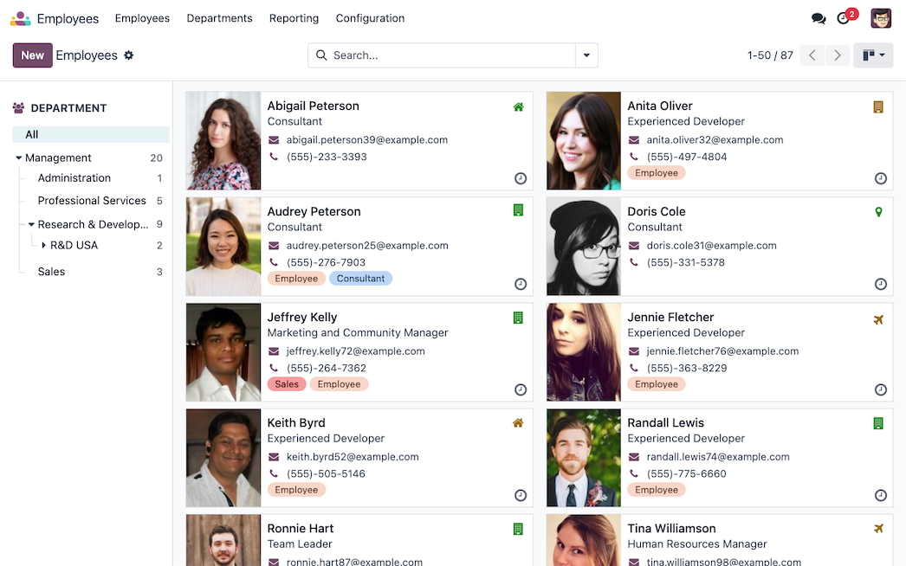
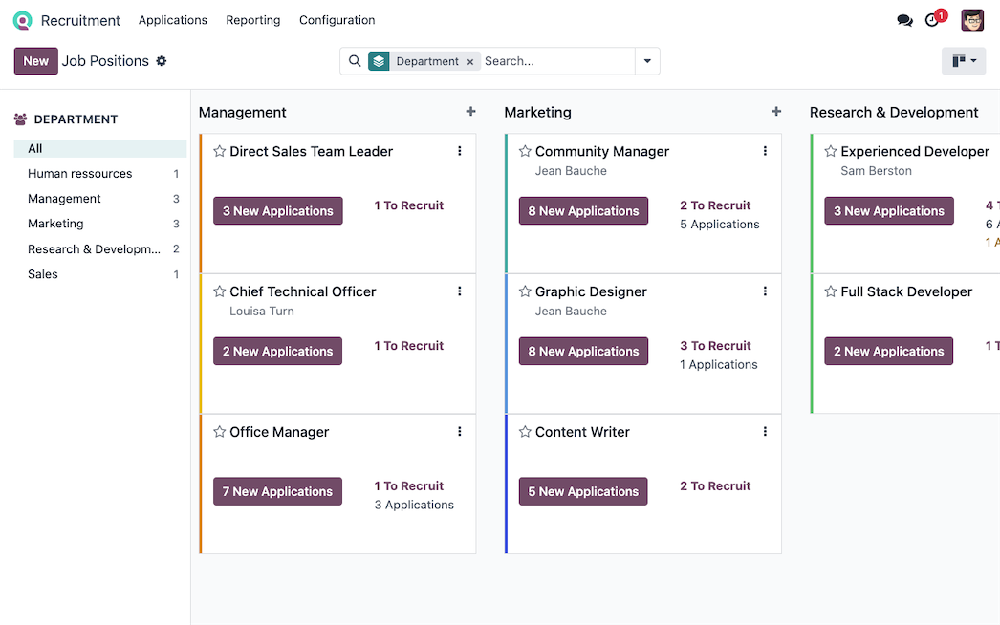
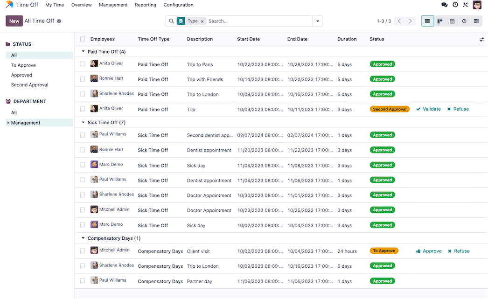
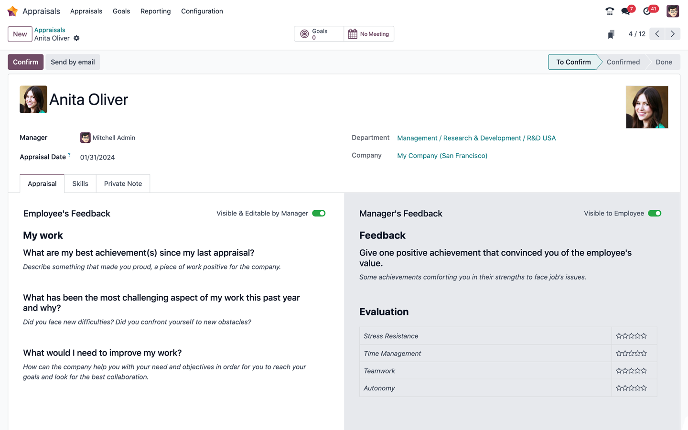
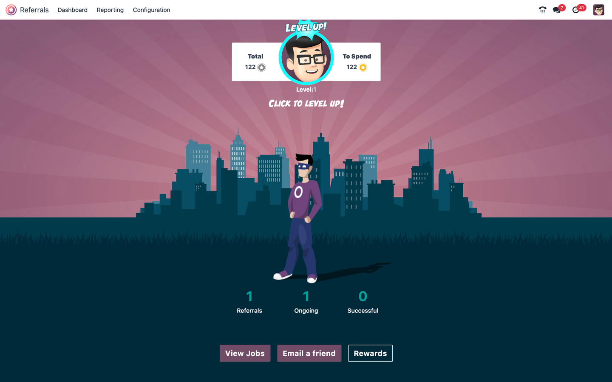

Les RH avec Odoo
Employés
Centralisez et gérez efficacement toutes les informations de vos employés dans un espace unique et sécurisé...

Recrutement
Optimisez votre processus de recrutement avec un suivi complet des candidatures et une gestion simplifiée des entretiens...

Congés
Gérez facilement les demandes de congés, les absences et le planning des équipes...

Évaluations
Suivez la performance et le développement de vos employés avec des évaluations personnalisées...

Recommandation
Encouragez la cooptation et récompensez les recommandations pertinentes de vos collaborateurs...

Parc Automobile
Gérez votre flotte de véhicules d'entreprise et optimisez leur utilisation...